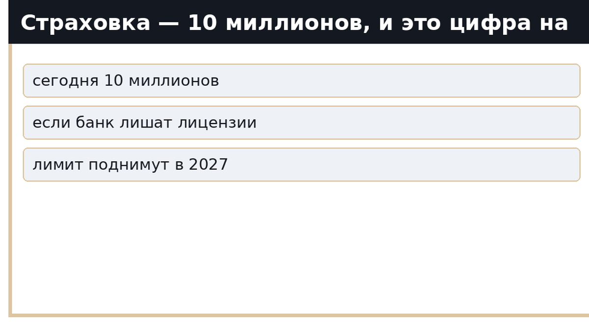
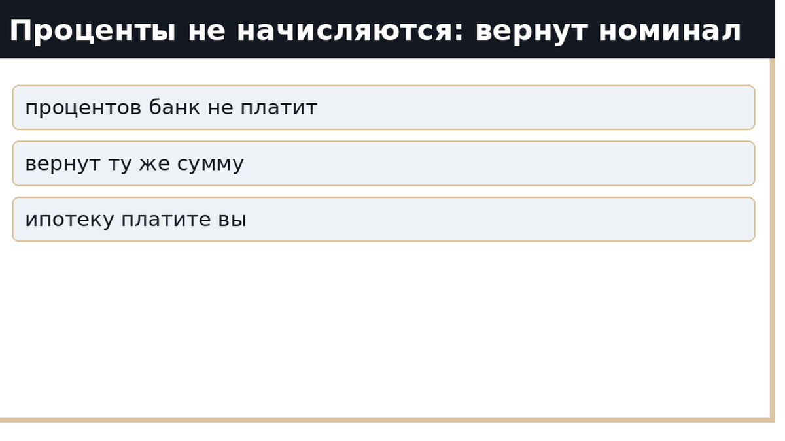
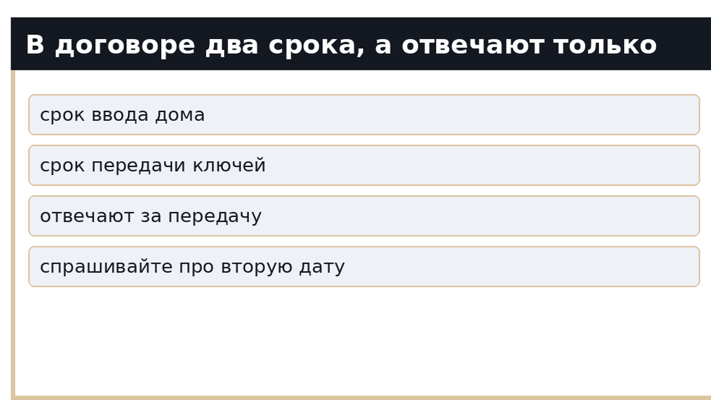
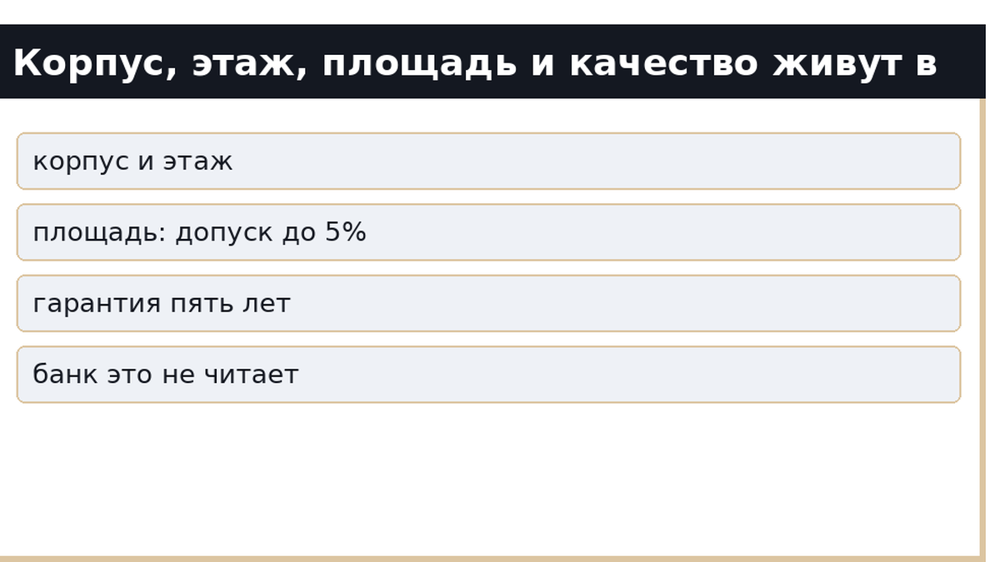
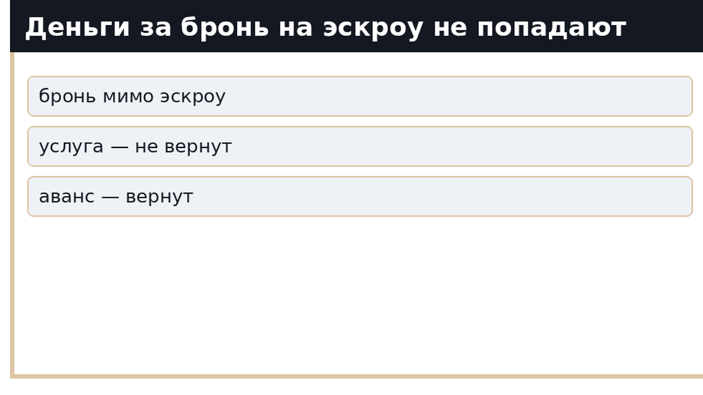
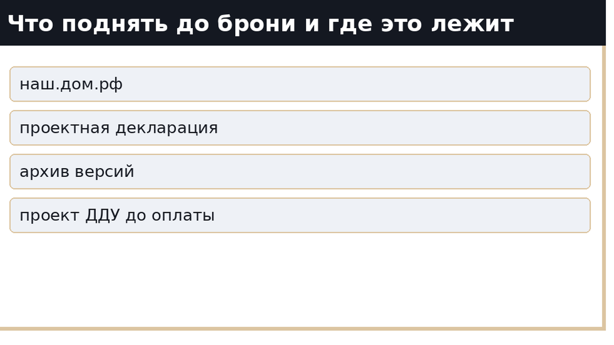

В шоуруме тюменской новостройки разговор идёт по одному сценарию. Планировка на экране, кофе, менеджер доводит до фразы, после которой человек выдыхает: «У нас эскроу, всё по 214-ФЗ, деньги застрахованы». Через двадцать минут покупатель платит за бронь и уезжает домой с буклетом. Не с проектом договора — с буклетом.
Приветствую. Я Святослав Шакин, риэлтор в Тюмени. Веду сделку сам, от первого звонка до регистрации, и в новостройках чаще всего вижу одну и ту же дыру: в фразе про эскроу склеены три разные вещи. Счёт в банке защищает сумму. Срок, корпус, этаж, площадь и качество защищает текст ДДУ. А деньги за бронь на эскроу не попадают вообще — они идут отдельным платежом по отдельному договору, мимо всей конструкции 214-ФЗ.
Покажу, что банк действительно закрывает, что остаётся вашей зоной ответственности и почему всё это читают до брони. До брони проверка ничего не стоит. После брони человек уже эмоционально купил квартиру и читает договор как формальность.
Быстрый инсайт. Эскроу — это сейф с расписанием, а не экспертиза стройки. Он держит вашу сумму и возвращает её при расторжении. За срок передачи, площадь и качество отвечает застройщик по тексту ДДУ, и спорить вы будете именно текстом. Страховое возмещение по счёту сегодня — не более 10 млн рублей, проценты на деньги не начисляются, а плата за бронь живёт вне 214-ФЗ. Сначала проект договора, потом деньги.
Механика простая. Дольщики вносят цену договора на счета эскроу в уполномоченном банке (ст. 15.4 ч. 1 214-ФЗ). Если стройка идёт на целевой кредит, счёт открывают в том же банке, который этот кредит выдал (ч. 1.1). Деньги лежат там до ввода дома в эксплуатацию.
Дальше то, что в отделе продаж проговаривают редко:
Вердикт секции: банк не даёт застройщику взять ваши деньги раньше срока и возвращает их, если сделка развалилась. Проект, качество и договор он не проверяет. Это не его работа.

Если банк, где открыт счёт, потеряет лицензию, возмещение по счёту эскроу для расчётов по ДДУ составляет 100 % остатка, но не более 10 млн рублей — ст. 13.2 ФЗ-177 «О страховании вкладов». Если счетов у одного человека несколько, возмещение распределяется пропорционально, но в совокупности всё равно не больше 10 млн.
Есть условие, о котором почти не говорят: возмещение не выплачивается, если у Агентства по страхованию вкладов уже есть сведения о государственной регистрации права собственности дольщика на объект либо о вводе дома и регистрации права хотя бы на одно помещение в нём.
Про 30 млн вы могли слышать. Законопроект № 1240316-8 внесён Правительством в мае 2026 года и поднимает лимит с 10 до 30 млн; профильный комитет Госдумы рекомендовал его к первому чтению в июле. Но вступление заявлено с 1 января 2027 года и только для страховых случаев после этой даты. Сейчас работает лимит 10 млн. Планировать сделку по цифре из новости — плохая идея.
Для Тюмени это не абстракция. Массовый городской лот в лимит укладывается, а верх рынка выходит за него заметно: в подборках новостроек с эскроу цены идут от 3,3 млн до 69,85 млн рублей. Если ваша квартира дороже 10 млн, разницу страховка не закроет.

Строка закона, которую стоит прочитать до подписания: на деньги, лежащие на счёте эскроу, проценты не начисляются, вознаграждение банку тоже не выплачивается (ст. 15.5 ч. 5). Ваши деньги лежат в банке два-три года бесплатно.
С ипотекой картина честнее некуда: банк держит вашу сумму без процентов, а вы всё это время платите проценты по кредиту. Если договор расторгнут, возвращается номинал. Та же сумма цифрами — но за прошедшие годы она подешевела, и купить на неё аналогичную квартиру уже сложнее.
Проценты за пользование деньгами по ст. 9 ч. 2 214-ФЗ (1/300 ставки рефинансирования за каждый день, гражданину — в двойном размере) платит застройщик, не банк. Если застройщик в банкротстве, взыскание этих денег — отдельная и долгая история.

Здесь теряют деньги чаще всего. В ДДУ живут два разных срока:
Спорить вы будете по второму. Между вводом дома и ключами могут пройти месяцы, и на неустойку это не влияет, пока не нарушен именно срок передачи. Поэтому в разговоре с менеджером выясняйте не «когда сдача», а какая дата передачи стоит в проекте договора.
Срок к тому же двигают. Если застройщик понимает, что не успевает, он обязан не позднее чем за два месяца до истечения срока прислать информацию и предложение изменить договор (ст. 6 ч. 3). Изменение оформляется соглашением по правилам Гражданского кодекса. Эскроу к этому отношения не имеет: счёт спокойно ждёт нового срока.
Односторонний отказ от договора возможен при просрочке передачи более чем на два месяца (ст. 9 ч. 1 п. 1) и при существенном нарушении требований к качеству (п. 3). Деталь, на которой обжигаются: письмо о переносе срока, когда фактической просрочки ещё нет, основанием для одностороннего отказа не является. Только через суд.

Существенные условия ДДУ перечислены в ст. 4 ч. 4: конкретный объект с планом и характеристиками, срок передачи, цена и порядок оплаты, гарантийный срок, способ работы с деньгами. Нет хотя бы одного — договор считается незаключённым (ч. 5). Банк такой договор не починит: он его на полноту вообще не читает.
Дальше по списку:
Разложу по ролям, чтобы не путать сейф с экспертизой:
| Что на кону | Кто закрывает | Чем закрывается |
|---|---|---|
| Сумма на счёте до ввода дома | Банк-эскроу-агент | ст. 15.4, 15.5 214-ФЗ; возмещение до 10 млн по ст. 13.2 ФЗ-177 |
| Срок передачи ключей | Застройщик | Срок передачи в тексте ДДУ, неустойка по ст. 6 ч. 2 |
| Корпус, этаж, площадь, планировка | Застройщик | Существенные условия ст. 4 ч. 4, допуск по площади до 5 % |
| Качество отделки и конструктива | Застройщик | ст. 7, гарантийный срок не менее 5 лет |
| Деньги за бронирование | Никто из этих двоих | Отдельный договор по Гражданскому кодексу, вне 214-ФЗ |
Читается таблица так: при раскрытии счетов банк проверяет факт разрешения на ввод. Не то, как закрываются окна, ровные ли стяжки и совпал ли этаж с макетом в шоуруме.

Договор бронирования 214-ФЗ не регулируется, в Росреестре не регистрируется и живёт по общим правилам Гражданского кодекса. Прав дольщика он не даёт.
Юристы указывают прямо: зачесть плату за бронь в цену ДДУ нельзя — вся цена договора обязана идти на счёт эскроу. Значит, бронь — отдельный платёж, и его судьба зависит от одной формулировки:
Эти два слова читаются за минуту до оплаты, а не после. Вот почему проверка делается до брони: на этом этапе выход из сделки ещё ничего не стоит.

Главный источник — Единая информационная система жилищного строительства, портал наш.дом.рф. По ст. 3.1 ч. 1 214-ФЗ застройщик раскрывает информацию, размещая её именно там, и раскрытой она считается только после размещения в системе. Буклет, сайт застройщика и слова менеджера раскрытием не являются.
В карточке жилого комплекса смотрим:
Отдельно про банк. Совет «сверься с перечнем банков на сайте ЦБ» устарел: Банк России с 1 января 2026 года прекратил публикацию перечня по постановлению № 697 в связи с изменениями законодательства. Проверяйте банк-эскроу-агента по проекту ДДУ и карточке ЖК, а не по списку, которого больше нет.
И последнее по порядку, первое по важности: договор долевого участия в Тюменской области подаётся на государственную регистрацию только в электронной форме. Именно регистрация ДДУ защищает от двойных продаж, и только после неё деньги уходят на эскроу.
Есть цифра, которая объясняет, почему я так занудно развожу «деньги» и «срок». По отчёту Банка России о проектном финансировании покрытие эскроу в Тюменской области снизилось с 86 % (ноябрь 2024 года) до 54 % к маю 2026-го. Для сравнения: Свердловская область — с 97 % до 75 %, Челябинская — с 73 % до 67 %. Средняя ставка проектного финансирования в УрФО — 11,63 % против 9,95 % по России.
По-человечески это значит вот что: денег дольщиков на счетах примерно вдвое меньше, чем застройщики уже должны банкам по проектным кредитам. На защиту денег конкретного покупателя это не влияет — ваша сумма лежит на вашем счёте. Но это ровно та иллюстрация, о которой вся статья: эскроу страхует кошелёк, а не сроки стройки.
Паниковать не буду и вам не советую. Сами застройщики объясняют показатель стадией проектов и ростом доли рассрочек: платежи по рассрочке приходят ближе к вводу и в статистику пока не попадают. Отраслевые комментаторы называют базовым сценарием не массовые банкротства, а точечные санации и смену собственников — банки заинтересованы в достройке. По данным ЕРЗ, число регионов с покрытием ниже 50 % за год выросло с одного до четырёх, при этом Тюменская область — среди немногих крупных регионов с положительной месячной динамикой, плюс один процентный пункт.
Ещё один этап, который эскроу не покрывает. Деньги застройщик получил, дом введён — а права на квартиру у вас пока нет, пока её не поставят на кадастровый учёт и не зарегистрируют право.
Тюменская статистика показывает масштаб: за 2025 год и первое полугодие 2026-го на кадастровый учёт поставлено 168 многоквартирных домов, построенных с привлечением средств дольщиков (117 и 51 соответственно), зарегистрировано 51 600 прав застройщиков и дольщиков на помещения и машино-места. Доля помещений без зарегистрированных прав снизилась с 37,2 % по итогам 2025 года до 14,8 % к концу первого полугодия 2026-го.
Работает механизм «Застройщик за дольщика»: после передачи объекта и постановки на кадастровый учёт застройщик сам подаёт документы в Росреестр, тоже только электронно. Ждать не обязательно — дольщик вправе подать заявление и самостоятельно. Объём рынка для понимания: за первое полугодие 2026 года в Тюменской области зарегистрирован 9 021 договор долевого участия: 7 098 на жилую недвижимость и 1 923 на нежилую.
Режим 2026 года отличается от того, к которому многие привыкли, и на форумах до сих пор пишут устаревшее.
Сама формула из ст. 6 ч. 2: 1/300 ставки рефинансирования от цены договора за каждый день просрочки, гражданину — в двойном размере. Ставку берите действующую: ключевая ставка Банка России сейчас 14,00 % годовых (действует с 27 июля 2026 года).
Чеклист на вечер, который экономит месяцы:
Если на любом шаге вам отвечают «проект договора покажем после брони» — не платите. Это и есть ответ, который вы искали.
Всё перечисленное проверяется самостоятельно: документы открытые, доступ бесплатный, уходит один вечер. Если вечера нет или хочется пройти по проекту ДДУ второй парой глаз до оплаты брони — напишите мне в Telegram: t.me/Tyumen_Rieltor. Разберём конкретный корпус, конкретный договор и конкретные два срока в нём.
Недвижимость — это не квадратные метры. Это тишина, в которой начинается новая жизнь.
И честно про предел. Проверка до брони не обещает, что спора не будет. Она обещает, что вы вошли в сделку с открытыми глазами и знали, за что отвечает банк, а за что человек по ту сторону стола. Я риэлтор, а не юрист: признание договора недействительным, взыскание неустойки и банкротство застройщика ведёт юрист по долевому строительству.
Материал проверен: Святослав Шакин, риэлтор в Тюмени. Он не заменяет индивидуальную юридическую консультацию по вашему договору.
Нет. Счёт эскроу гарантирует, что застройщик не получит ваши деньги до разрешения на ввод в эксплуатацию, а вы получите их обратно при расторжении договора. Сроки, качество и сам факт достройки он не обеспечивает — за это отвечает застройщик по ДДУ.
100 % остатка на счёте эскроу, но не более 10 млн рублей (ст. 13.2 ФЗ-177). Лимит 30 млн — это внесённый законопроект со сроком вступления с 1 января 2027 года и только для страховых случаев после этой даты. Сегодня работают 10 млн.
Нет. Проценты не начисляются, вознаграждение банку тоже не выплачивается (ст. 15.5 ч. 5). При расторжении договора возвращается номинал внесённой суммы.
Зависит от формулировки в договоре бронирования. «Оплата услуги» — вернуть почти невозможно. «Аванс в счёт цены договора» — возврат реален. В цену ДДУ плата за бронь не засчитывается: вся цена договора обязана идти на счёт эскроу.
Само по себе письмо о переносе, когда фактической просрочки ещё нет, основанием для одностороннего отказа не является: изменить срок можно только соглашением сторон, а спорить придётся в суде. Односторонний отказ работает при просрочке передачи объекта более чем на два месяца (ст. 9 ч. 1 п. 1).
По проекту ДДУ и карточке жилого комплекса в ЕИСЖС. Перечень банков по постановлению № 697 Банк России с 1 января 2026 года не публикует, поэтому совет «сверься со списком на сайте ЦБ» больше не работает.